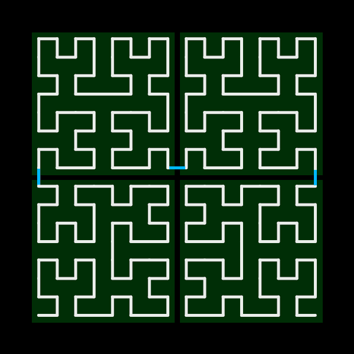
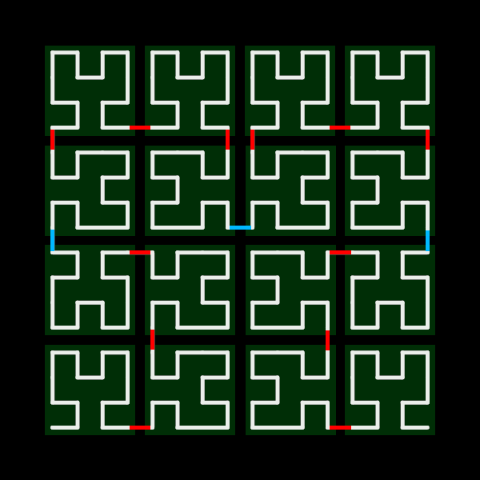
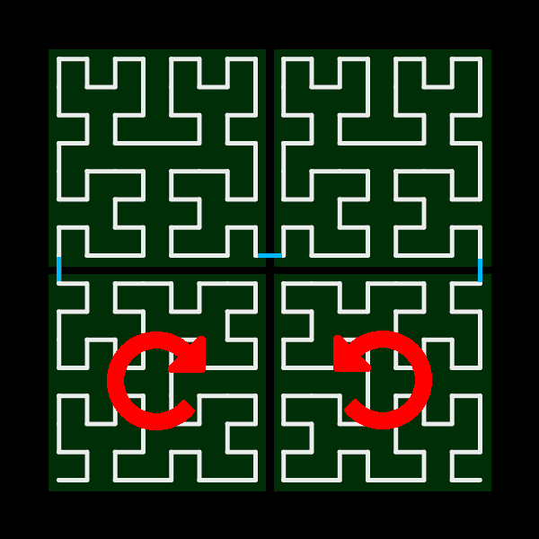

⨉

The first four orders of the pseudo-Hilbert curve.
As you browse my website, you may have picked up on a recurrent motif: a strange pattern, made of a singular line, zigging and zagging across a square canvas, folding over — but never crossing — itself. These patterns are simplified representations of a fascinating type of geometry known as space-filling curves. But to truly appreciate why they exist, we must go back in time.
Germany, 1877. Georg Cantor, the father of set theory, makes a huge — and shocking — breakthrough: he finds that there is a one-to-one correspondence between points on a unit line segment and the points within a unit square. In other words, you can pick out an arbitrary point in a square, and you can map it to a specific and unique number between 0 and 1. His work would inspire other mathematicians to search for such a curve, which was thought impossible at the time.
One such mathematician was Giuseppe Peano, who discovered his Peano curve in 1890. His curve recursively subdivided squares into nine equal parts, and used a S-shaped primitive to build the space-filling curve.
The second iteration of the Peano curve.
In 1891, David Hilbert improved upon Peano's curve by subdividing the square into four parts instead of nine, and using a simpler U-shape primitive. And so the Hilbert curve was born; a continuous, infinitely-detailed fractal curve, snaking around the plane. The curve has some properties that make it actually useful in the real world; it is used in image editing, 3D rendering, and even in digital maps, where moving in some direction on the 2D map corresponds to shifting in some direction in one-dimensional memory. In parallel processing, the Hilbert curve can be used to schedule jobs between cores in order to optimize and cluster similar tasks in the same area.
Because the Hilbert curve is a fractal, there is no real way to visualize the true Hilbert curve; instead, we draw simplified iterations of the curve, recursing only a few levels deep instead of infinitely. These simplified representations are known as "pseudo-Hilbert curves", and the amount of recursion used to generate the curve is called the order. Thus, higher-order pseudo-Hilbert curves are progressively more detailed and occupy more of the plane. There are multiple algorithms that can be built to draw these pseudo-curves; let's look at a few of them below.
The first and most obvious method that comes to mind for drawing pseudo-Hilbert curves is some sort of recursive method; after all, the Hilbert curve is a fractal — an object that contains many smaller images of itself nested within itself.
But what's the pattern? Well, if we take a closer look at pseudo-Hilbert curves, we can see that each successive order of pseudo-Hilbert curve is simply four curves of the previous order, some rotated differently and then connected into one continuous curve using three line segments.
 A fourth-order curve being broken down into four third-order curves and then sixteen second-order curves.
Thus, we can break down this drawing problem for any nth-order curve into four (n-1)th order
sub-curves, and then each of those into four (n-2)th order sub-sub-curves, and so on until we
reduce the problem into the most basic first-order case.
Looking at the Hilbert curve superimposed over some x-y axes, we see that we also need to rotate the sub-curves in quadrants III and IV clockwise and counterclockwise, respectively.
Finally, we connect the four sub-curves with three line segments, using just a little bit of math to work those into the right places. The width of the line segments is the width of the curve or sub-curve divided by 2 raised to the order-th power. It turns out, as some basic math shows, that halving the width of each successive sub-curve as we recurse deeper while also decrementing the order yields a constant, unchanging line segment length, despite each level of recursion working with different scales.
The above process can be expressed quite succinctly with the below Javascript code, using p5.js to draw the lines. For the sake of
consistency, I've wrapped the function that is actually called recursively,
recursiveHilbertHelper, inside another function that takes only two arguments —
size and order,
just like the arguments taken by the other implementations of curve drawing that I'll show
later — and fills in the rest of the initial values of the base case for the recursive function.
Notice how recursiveHilbertHelper calls itself four times, once for each subdivision. Notice also how I make three calls to line — the p5 function for drawing line segments — per function call.
/*
* Draw a pseudo-Hilbert curve recursively.
*/
let recursiveHilbert =
(size, order) => recursiveHilbertHelper(size/2, size/2, size, order, 0);
let recursiveHilbertHelper = (cx, cy, size, order, rot) => {
push();
translate(cx, cy);
rotate(rot * PI / 2);
if (order > 1) {
let newC = size / 4;
recursiveHilbertHelper(-newC, -newC, size / 2, order - 1, 0); // top left
recursiveHilbertHelper(+newC, -newC, size / 2, order - 1, 0); // top right
recursiveHilbertHelper(-newC, +newC, size / 2, order - 1, +1); // bottom left
recursiveHilbertHelper(+newC, +newC, size / 2, order - 1, -1); // bottom right
}
// Connect the 4 quadrants together using 3 line segments.
let n = 2 ** (order + 1);
line(-size / n, -size / n, size / n, -size / n);
line(-size * (0.5 - 1 / n), -size / n, -size * (0.5 - 1 / n), size / n);
line(+size * (0.5 - 1 / n), -size / n, +size * (0.5 - 1 / n), size / n);
pop();
};Some realistic plant-like formations generated using L-systems. Unlike the one we use for Hilbert curves, this L-system achieves a less precise, more organic look via introducing randomness into the turtle's behavior, specifically into how much it turns or moves forward each step. By Daniel John Jones.
Before I move on to a purely iterative algorithm for drawing pseudo-Hilbert curves, I would like to cover one more particularly interesting way of drawing curves: via a Lindenmayer system.
L-systems are sort of a middle ground between the recursive and the iterative worlds. While our function doesn't call itself, as a recursive function would, and also uses for-loops (as an iterative function would) instead of breaking down the problem into smaller subproblems like we see with the previous implementation, at its heart it relies on a recursive-esque concept: text replacement.
The idea is simple, but the vocabulary involved to describe it is a bit formal. L-systems consist of three parts: a starting string, called the "axiom", an "alphabet", or a set of characters that have some role, and "production rules", or a set of replacements that describe how to manipulate the string. The "alphabet" is further broken down into "constants" and "variables"; "constants" are characters that are not replaced and thus do not change, and "variables" are characters that are replaced as part of the production rules.
It's best to describe this using a simple example; let's say we have:
"A"A and B(A -> AB) and (B -> A).We start off with the starting string, or the "zeroth iteration" (n=0):
AFor our first iteration, we look at the previous string and follow the production rules. Here, "A" maps to "AB". This yields our second iteration:
ABFollowing the same process, we map "A" to "AB" and "B" to "A" to produce the third iteration:
ABA...and then the fourth...
ABAAB...and then the fifth, sixth, and seventh:
(As a side note: this is, in fact, Aristid Lindenmayer's original L-system for modeling the growth of a certain species of algae, Anabaena catenula, in 1968.)
You can see how each iteration is more complex than the last, and how we could use this system to build up complex patterns using simple production rules.
Looking back at the Hilbert curve, its nested, repetitive structure seems perfect for this kind of text-replacement approach. So, what if we could use an L-system to generate instructions for drawing pseudo-Hilbert curves? And, what if we could find some set of production rules that would allow us to generate pseudo-curves of any order, simply by iterating the text replacement process more times?
Spoiler alert: yes, such a ruleset exists. And using that ruleset, we can generate instructions for pseudo-Hilbert curves of any order, and then interpret those instructions using turtle graphics. Turtle graphics is a method of drawing in which you imagine a turtle walking across the page; you can tell it to take a step forward or turn, and it leaves a path behind it as it moves.
The L-system for generating the curves is as below:
F, +,
-A, B"A"(A -> − B F + A F A + F B −),
(B -> + A F − B F B − F A +)The turtle ignores the A's and B's when it follows the instructions. F tells the turtle to take a step forward, - tells the turtle to turn 90° to the left, and + tells the turtle to turn 90° to the right.
Okay, it looks a lot more complex and cryptic than the algae example from earlier, but if you look closer, it's not totally unrecognizable.
If you look only at the constants, you can make out the basic primitive Hilbert curve shape in the production rules: the turtle moves forward, turns in some direction, moves forward again, turns again, and then moves forward one last time.
Each time we build the next iteration of the L-system, we can create the next higher order pseudo-Hilbert curve. The first five iterations of our L-system are shown below.
A
-BF+AFA+FB-
-+AF-BFB-FA+F+-BF+AFA+FB-F-BF+AFA+FB-+F+AF-BFB-FA+-
-+-BF+AFA+FB-F-+AF-BFB-FA+F+AF-BFB-FA+-F-BF+AFA+FB-+F+-+AF-BFB-FA+F+-BF
+AFA+FB-F-BF+AFA+FB-+F+AF-BFB-FA+-F-+AF-BFB-FA+F+-BF+AFA+FB-F-BF+AFA+FB
-+F+AF-BFB-FA+-+F+-BF+AFA+FB-F-+AF-BFB-FA+F+AF-BFB-FA+-F-BF+AFA+FB-+-
-+-+AF-BFB-FA+F+-BF+AFA+FB-F-BF+AFA+FB-+F+AF-BFB-FA+-F-+-BF+AFA+FB-F-+A
F-BFB-FA+F+AF-BFB-FA+-F-BF+AFA+FB-+F+-BF+AFA+FB-F-+AF-BFB-FA+F+AF-BFB-F
A+-F-BF+AFA+FB-+-F-+AF-BFB-FA+F+-BF+AFA+FB-F-BF+AFA+FB-+F+AF-BFB-FA+-+F
+-+-BF+AFA+FB-F-+AF-BFB-FA+F+AF-BFB-FA+-F-BF+AFA+FB-+F+-+AF-BFB-FA+F+-B
F+AFA+FB-F-BF+AFA+FB-+F+AF-BFB-FA+-F-+AF-BFB-FA+F+-BF+AFA+FB-F-BF+AFA+F
B-+F+AF-BFB-FA+-+F+-BF+AFA+FB-F-+AF-BFB-FA+F+AF-BFB-FA+-F-BF+AFA+FB-+-F
-+-BF+AFA+FB-F-+AF-BFB-FA+F+AF-BFB-FA+-F-BF+AFA+FB-+F+-+AF-BFB-FA+F+-BF
+AFA+FB-F-BF+AFA+FB-+F+AF-BFB-FA+-F-+AF-BFB-FA+F+-BF+AFA+FB-F-BF+AFA+FB
-+F+AF-BFB-FA+-+F+-BF+AFA+FB-F-+AF-BFB-FA+F+AF-BFB-FA+-F-BF+AFA+FB-+-+F
+-+AF-BFB-FA+F+-BF+AFA+FB-F-BF+AFA+FB-+F+AF-BFB-FA+-F-+-BF+AFA+FB-F-+AF
-BFB-FA+F+AF-BFB-FA+-F-BF+AFA+FB-+F+-BF+AFA+FB-F-+AF-BFB-FA+F+AF-BFB-FA
+-F-BF+AFA+FB-+-F-+AF-BFB-FA+F+-BF+AFA+FB-F-BF+AFA+FB-+F+AF-BFB-FA+-+-The Javascript code for drawing a pseudo-Hilbert curve using an L-system is shared below. Note how the first half generates the instructions, building up progressively more complex iterations using the text-replacement method described above, and the second half actually interprets these instructions by working step-by-step through the generated string.
let lindenmayerHilbert = (size, order) => {
// Generate instructions using L-system
let axiom = "A";
let rules = {
'A': "-BF+AFA+FB-",
'B': "+AF-BFB-FA+"
};
for (let i = 0; i < order; i++) {
let next = "";
for (let j = 0; j < axiom.length; j++) {
let c = axiom.charAt(j);
next += (rules[c]) ? rules[c] : c;
}
console.log(next);
axiom = next;
}
// Interpret instructions using turtle
let seglength = size / 2 ** order;
let pos = createVector(seglength / 2, size - seglength / 2);
let vel = createVector(seglength, 0);
for (let i = 0; i < axiom.length; i++) {
switch (axiom.charAt(i)) {
case '-':
vel.rotate(-PI / 2);
break;
case '+':
vel.rotate(+PI / 2);
break;
case 'F':
let x = pos.x,
y = pos.y;
pos.add(vel);
line(x, y, pos.x, pos.y);
break;
}
}
};The final way that we're going to look at is purely iterative. There is no recursion, no breaking down the problem into four parts, and no taking advantage of repeated nested structures, as our previous two algorithms used.
Although usually I'm partial towards recursive solutions, purely because they tend to be more beautiful and concise while revealing the deeper structure and core of the problem, I have to say that in this case this algorithm is my favorite of the three.
Why? Well, with fractal patterns such as the Hilbert curve, recursive functions are the go-to way to attack problems. This is simply because these fractals are often hard to describe iteratively, much harder than it is to just take advantage of nested, recursive structures and work from there.
This algorithm, though, doesn't do any of that. Instead, it gives each vertex of the curve its own index - starting index 0 on the bottom left. From there, it calculates the location of each point individually, without depending on the location of previously calculated points. And it does so using an incredibly simple observation: the location of each point is stored in the bits of its index.

A visualization of the iterative algorithm. By Marcin Chwedczuk.
Breaking down a point's index into its binary representation, we actually find a pattern: looking at two bits at a time, we can figure out which quadrant contains the point in each sub-curve. For example, in the above curve we can tell from the first two bits of 7dec (11bin) that the point is in quadrant IV of the first order sub-curve. We can then tell from the next two bits (01bin) that the sub-curve as a whole is in quadrant II of the second order curve.
So, by repeatedly shifting an index's binary representation to the right by two bits and then masking it with 3 (0011bin), we can find the position of the point, and then the sub-sub-curve that contains that point, and then the sub-curve that contains that sub-sub-curve, etc. until we reach the order of the curve we want to draw. From there, accounting for the different rotation cases, we can add up the individual offsets of each sub-curves relative position until we obtain the absolute position of the point in x-y coordinates.
(For a much more detailed description of the algorithm, the idea from the algorithm is shamelessly stolen from here; my code is simply a reimplementation of the process described there using p5.js).
let iterativeHilbert = (size, order) => {
let N = 2 ** order;
let seglength = size / N;
let points = [
createVector(0, 0),
createVector(0, 1),
createVector(1, 1),
createVector(1, 0)
];
let prev = createVector(seglength / 2, size - seglength / 2);
for (let i = 0; i < N * N; i++) {
let bits = i;
let idx = bits & 3;
let next = points[idx].copy();
for (let j = 1; j < order; j++) {
bits = bits >>> 2;
idx = bits & 3;
let offset = 2 ** j;
let swap;
switch (idx) {
case 0:
swap = next.x;
next.x = next.y;
next.y = swap;
break;
case 1:
next.y += offset;
break;
case 2:
next.x += offset;
next.y += offset;
break;
case 3:
swap = offset - next.x - 1;
next.x = offset - next.y - 1;
next.y = swap;
next.x += offset;
break;
}
}
next.mult(seglength);
next.add(seglength / 2, seglength / 2);
next.y = size - next.y;
line(prev.x, prev.y, next.x, next.y);
prev = next;
}
}So there we have it: three unique approaches to generating pseudo-Hilbert curves.
Besides the concrete algorithms for pseudo-curves, I also think the idea behind a true Hilbert curve is fascinating — the fact that we can create a bijective map between the points along (0,1) and within n-dimensional space, to me, opens up only more questions in pure math that are still unsolved (or, maybe, unsearchable on the internet and not well-known). But the curve also has applications outside pure math, in a wide range of different fields and different technologies which David Hilbert could never dream would exist.
Why did I think this curve was so important that I included it as the icon throughout the website (with even the favicon being a second-order curve)? Well, there are two reasons:
For one, it is a reminder to me that there are always different ways to approach a problem. In drawing these curves, we took three radically different approaches using completely different thought processes but still achieved the same result. Even in a problem that seems initially very concrete and limited like this one, there is still space for creativity and insight; I hope to keep this in mind as I tackle more problems later on and even in my daily life; how can, instead of clashing with someone of a different view, I rather reconcile their opinions as a valid alternative view to mine, with different background motivations and approaches? How can I then process this information and add it to my own understanding of a topic to gain a more holistic, complete view?
In addition, the Hilbert curve reminds me that something even as seemingly esoteric as itself can find unique and wide-ranging applications in unexpected areas. Instead of just jumping to some default solution to a problem in my mind, I should take the time to process and think about other ways to approach it. While I learn new concepts, I should also more actively try to link the new concepts with other areas of study in my mind so that I am more likely to notice these connections when I apply what I learn.